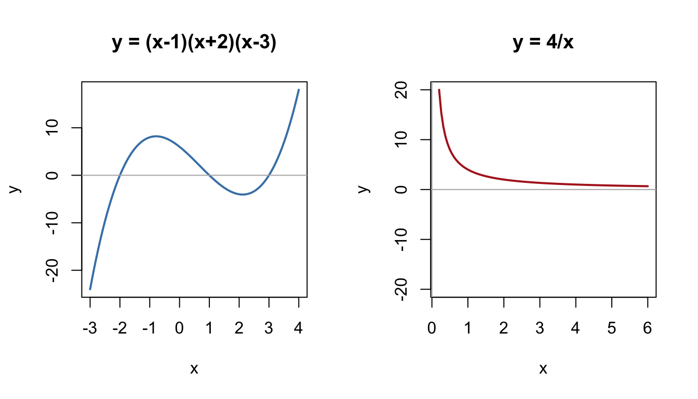
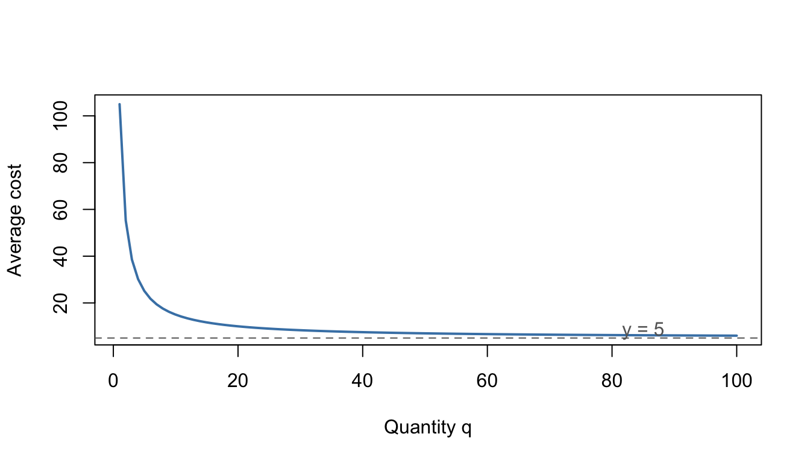
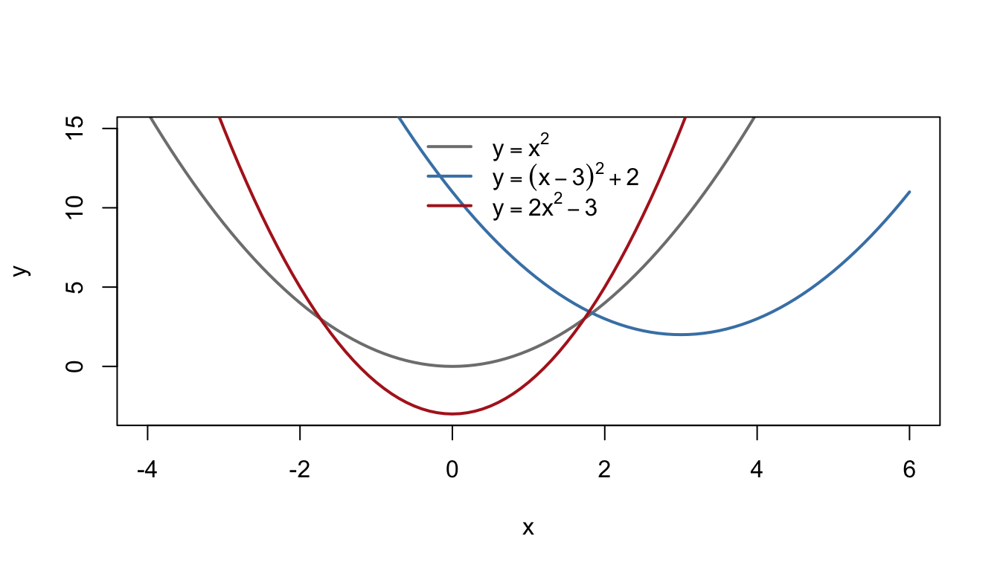

3 Functions and Graphs
Management Science is full of relationships: how demand responds to price, how cost depends on output, how revenue varies with sales. Functions are how we write these relationships down, and graphs are how we see them. This chapter rebuilds your fluency with sketching, intersections, asymptotes, proportionality, composite and inverse functions, and transformations — then puts it all to work in modelling.
A quick reminder before we start: a function takes an input from its domain and returns exactly one output; the set of possible outputs is the range. Keep domain and range in the back of your mind throughout — in applications they carry real meaning (prices and quantities are rarely negative!).
Why this matters: When an economist says "demand is downward-sloping" or an operations manager says "average cost flattens out at scale", they are describing the shape of a graph. Reading and sketching graphs quickly is one of the highest-value skills you can bring to university.
3.1 Graphs of functions
3.1.1 Key idea
You should be able to sketch, without a calculator:
- Polynomial functions, using their roots and end behaviour. A factorised cubic like \(y = (x-a)(x-b)(x-c)\) crosses the \(x\)-axis at \(a\), \(b\) and \(c\); a repeated factor like \((x-a)^2\) means the curve touches the axis there.
- Reciprocal functions like \(y = \dfrac{k}{x}\) and \(y = \dfrac{k}{x^2}\), which have two branches and never touch the axes.
A good sketch shows the key features — intercepts, turning behaviour, asymptotes — not a perfect plot.

Figure 3.1: A factorised cubic crossing at its roots, and the two branches of a reciprocal function.
3.1.2 Worked examples
Example (simple). Sketch \(y = x(x - 2)(x + 3)\).
Roots at \(x = 0, 2, -3\). It's a positive cubic, so it comes from the bottom-left and leaves to the top-right, crossing the axis at each root. The \(y\)-intercept is \(y = 0\) (since \(x = 0\) is a root).
Example (moderate). Sketch \(y = (x - 1)^2(x + 2)\).
Roots at \(x = 1\) (repeated) and \(x = -2\). The curve crosses at \(-2\) but only touches at \(1\). Positive cubic shape; \(y\)-intercept at \(y = (−1)^2(2) = 2\).
Example (challenging — a demand curve). A product's demand is modelled by \(q = \dfrac{600}{p}\) for \(p > 0\), where \(p\) is price and \(q\) is quantity sold. Sketch the curve and interpret its shape. What is unusual about revenue under this model?
This is one branch of a reciprocal curve: as price rises, quantity falls, steeply at first and then more gently, never quite reaching zero. Revenue is \(R = pq = p \times \dfrac{600}{p} = 600\) — constant, whatever the price. Curves like this (where revenue doesn't respond to price) are a special case economists call unit elastic demand; you'll meet elasticity properly at university.
3.1.3 Practice exercises
- Sketch \(y = (x - 1)(x + 2)(x - 4)\), marking all axis intercepts.
- Sketch \(y = -\dfrac{2}{x}\), labelling both branches.
- Sketch \(y = x^2(x - 3)\). At which root does the curve touch rather than cross?
Common mistakes:
- A repeated root means the curve touches the axis, not crosses it — check the power of each factor.
- Reciprocal graphs have two branches; sketching only one loses half the picture.
- Don't force curves through the origin out of habit — check whether \(x = 0\) actually gives \(y = 0\).
3.2 Intersections: solving equations graphically
3.2.1 Key idea
The points where two graphs meet are the solutions of "curve one equals curve two". Setting \(f(x) = g(x)\) and solving gives the \(x\)-coordinates of the intersections; graphically, no solution means the curves never meet. This is simultaneous equations (Section 2.4) seen through a graphical lens.
3.2.2 Worked examples
Example (simple). Find where \(y = 3x - 2\) meets \(y = 10 - x\).
\(3x - 2 = 10 - x \Rightarrow 4x = 12 \Rightarrow x = 3\), \(y = 7\). One intersection: \((3, 7)\).
Example (moderate). Find where \(y = x^2 - 4x\) meets \(y = x - 4\).
\(x^2 - 4x = x - 4 \Rightarrow x^2 - 5x + 4 = 0 \Rightarrow (x-1)(x-4) = 0\).
Intersections at \((1, -3)\) and \((4, 0)\): the line cuts the parabola twice.
Example (challenging — break-even points). A firm's total cost and total revenue (in £000s) are
\[C(q) = 20 + 13q, \qquad R(q) = 25q - q^2.\]
Find the break-even quantities and interpret the graph.
Break-even means \(R(q) = C(q)\):
\[25q - q^2 = 20 + 13q \;\Rightarrow\; q^2 - 12q + 20 = 0 \;\Rightarrow\; (q - 2)(q - 10) = 0.\]
The revenue curve crosses the cost line at \(q = 2\) and \(q = 10\). Between these quantities revenue lies above cost, so the firm is profitable for \(2 < q < 10\); outside them it makes a loss. (Compare the quadratic-inequality approach in Section 2.5 — same problem, two viewpoints.)
3.2.3 Practice exercises
- Find the point of intersection of \(y = 2x + 5\) and \(y = 11 - x\).
- Find where \(y = x^2 - 4x\) meets \(y = 2x - 9\). What does your answer tell you about the line and the curve?
- Cost is \(C(q) = 27 + 4q\) and revenue is \(R(q) = 16q - q^2\). Find the break-even quantities.
Common mistakes:
- After finding \(x\), substitute back to find \(y\) — an intersection is a point, not just an \(x\)-value.
- If the resulting quadratic has a negative discriminant, that's not an error: it means the curves genuinely don't meet. Say so, and interpret it (e.g. "the firm can never break even").
Self-check: intersections
Q1. The lines \(y = 2x + 1\) and \(y = 13 - x\) meet at one point. Give its coordinates.
\(x =\) and \(y =\)
Q2. To find where the line \(y = 4x - 13\) meets the parabola \(y = x^2 - 2x - 4\), set them equal and rearrange to get \(x^2 - 6x + 9 = 0\).
The discriminant of this quadratic is , so the line and the parabola meet at .
Q3. Setting \(y = 2x\) equal to \(y = x^2 + 3\) gives \(x^2 - 2x + 3 = 0\).
The discriminant is . Graphically, this means:
Q4. A firm has total cost \(C(q) = 24 + 5q\) and total revenue \(R(q) = 16q - q^2\) (both in £000s). Find the break-even quantities.
Smaller: \(q =\) Larger: \(q =\)
Q5. Which pair of equations has exactly two points of intersection?
- \(y = x^2\) and \(y = -1\)
- \(y = x^2\) and \(y = 2x - 1\)
- \(y = x^2\) and \(y = x + 2\)
- \(y = x + 1\) and \(y = x + 3\)
Answer:
Q1. \((4, 9)\). From \(2x + 1 = 13 - x\): \(3x = 12\), so \(x = 4\), then \(y = 2(4) + 1 = 9\). Check in the other line: \(13 - 4 = 9\) ✓. Remember an intersection is a point — the \(y\)-value is half the answer.
Q2. Discriminant \(= (-6)^2 - 4(1)(9) = 0\), so there is one repeated root (\(x = 3\)): the line is tangent to the parabola, touching at exactly one point. The trap is assuming "quadratic" automatically means "two solutions".
Q3. Discriminant \(= (-2)^2 - 4(1)(3) = -8 < 0\): no real solutions, so the line never meets the parabola. A negative discriminant is not an error — it is the algebra telling you the graphs don't cross.
Q4. \(q = 3\) and \(q = 8\). From \(16q - q^2 = 24 + 5q\): \(q^2 - 11q + 24 = 0\), which factorises as \((q - 3)(q - 8) = 0\). Watch the signs when moving everything to one side — a dropped sign is the usual source of a quadratic that "won't factorise". Between \(q = 3\) and \(q = 8\) revenue sits above cost, so that is the profitable range.
Q5. (C). \(x^2 = x + 2\) gives \(x^2 - x - 2 = (x - 2)(x + 1) = 0\): two solutions. (A) requires \(x^2 = -1\): no intersections. (B) gives \((x - 1)^2 = 0\): tangent, one point. (D) is a pair of parallel lines: no intersections.
3.3 Asymptotes
3.3.1 Key idea
An asymptote is a line a curve approaches but never reaches.
- A vertical asymptote occurs where the denominator of a fraction is zero (the function "blows up"). For \(y = \dfrac{1}{x - 3}\), the vertical asymptote is \(x = 3\).
- A horizontal asymptote describes long-run behaviour as \(x \to \pm\infty\). For \(y = \dfrac{2x + 1}{x - 3}\), when \(x\) is huge the \(+1\) and \(-3\) barely matter, so \(y \approx \dfrac{2x}{x} = 2\): the horizontal asymptote is \(y = 2\).
3.3.2 Worked examples
Example (simple). State the asymptotes of \(y = \dfrac{3}{x + 2}\).
Vertical: \(x = -2\) (denominator zero). Horizontal: \(y = 0\) (the fraction shrinks to nothing as \(x\) grows).
Example (moderate). Find the asymptotes of \(y = \dfrac{2x + 1}{x - 3}\) and sketch the curve.
Vertical asymptote at \(x = 3\); horizontal asymptote at \(y = 2\). The curve has two branches, one each side of \(x = 3\), hugging the asymptotes. Intercepts: \(x = -\tfrac12\) (setting \(y=0\)) and \(y = -\tfrac13\) (setting \(x=0\)) pin the sketch down.
Example (challenging — average cost in the long run). From Section 2.7, a firm with total cost \(C(q) = 100 + 5q\) has average cost
\[AC(q) = \frac{100 + 5q}{q} = 5 + \frac{100}{q}, \qquad q > 0.\]
Identify the asymptotes and interpret them.
Vertical asymptote at \(q = 0\): producing almost nothing means the £100 fixed cost is spread over almost no units, so cost per unit explodes. Horizontal asymptote at \(y = 5\): as output grows, fixed cost per unit fades away and average cost settles towards the £5 variable cost of each unit — but never quite reaches it. Economists call this spreading fixed costs; the asymptote is the story.

Figure 3.2: Average cost AC(q) = 5 + 100/q approaching its horizontal asymptote y = 5.
3.3.3 Practice exercises
- State the asymptotes of \(y = \dfrac{4}{x - 5}\).
- Find the vertical and horizontal asymptotes of \(y = \dfrac{3x - 2}{x + 1}\).
- Average cost is \(AC(q) = \dfrac{200 + 4q}{q}\). Rewrite it in the form \(a + \dfrac{b}{q}\), state the horizontal asymptote, and interpret it in one sentence.
Common mistakes:
- The horizontal asymptote describes what happens for large \(x\); the curve is allowed to cross it for small \(x\).
- "The denominator is zero" gives a vertical asymptote only if the numerator isn't also zero there — a common factor cancels instead (Section 2.7).
3.4 Proportionality
3.4.1 Key idea
- Direct proportion: \(y \propto x\) means \(y = kx\) for some constant \(k\). Graph: a straight line through the origin.
- Inverse proportion: \(y \propto \dfrac{1}{x}\) means \(y = \dfrac{k}{x}\). Graph: a reciprocal curve.
The routine is always the same: use the given information to find \(k\), then use the formula.
3.4.2 Worked examples
Example (simple). \(y\) is directly proportional to \(x\), and \(y = 12\) when \(x = 3\). Find \(y\) when \(x = 7\).
\(y = kx\) with \(12 = 3k\), so \(k = 4\) and \(y = 4x\). When \(x = 7\), \(y = 28\).
Example (moderate). \(y\) is inversely proportional to \(x^2\), and \(y = 2\) when \(x = 3\). Find \(y\) when \(x = 6\).
\(y = \dfrac{k}{x^2}\) with \(2 = \dfrac{k}{9}\), so \(k = 18\). When \(x = 6\), \(y = \dfrac{18}{36} = \dfrac{1}{2}\). (Doubling \(x\) quartered \(y\) — the hallmark of an inverse-square law.)
Example (challenging — scheduling a job). The time \(T\) (hours) to complete an order is inversely proportional to the number of machines \(m\) running. With 6 machines the job takes 10 hours. The client needs it in 12 hours; will 4 machines do?
\(T = \dfrac{k}{m}\) with \(10 = \dfrac{k}{6}\), so \(k = 60\) (the job is "60 machine-hours" of work). With 4 machines, \(T = \dfrac{60}{4} = 15\) hours — too slow. You need \(\dfrac{60}{m} \le 12\), i.e. \(m \ge 5\) machines.
Worth pausing on the assumption: inverse proportion says machines never get in each other's way. Real operations often violate this — a limitation to note when modelling.
3.4.3 Practice exercises
- \(y \propto x\) and \(y = 12\) when \(x = 3\). Find \(y\) when \(x = 5\).
- \(y\) is inversely proportional to \(x\), and \(y = 8\) when \(x = 2\). Find \(x\) when \(y = 4\).
- A data-processing task is shared equally across identical servers, so run time is inversely proportional to the number of servers. Six servers take 10 minutes. How long would four servers take, and how many servers guarantee a run time of at most 5 minutes?
Common mistakes:
"Proportional" always means through a constant: write \(y = kx\) or \(y = k/x\) first, find \(k\), and only then answer the question.
Direct proportion graphs pass through the origin. A straight line with an intercept (\(y = kx + c\)) is linear but not proportional.
Why this matters: Proportional thinking is everywhere in Management Science: cost per unit, output per worker, time per machine. Recognising whether a relationship is direct, inverse, or neither is often the first modelling decision you make.
3.5 Composite functions
3.5.1 Key idea
A composite function applies one function to the output of another:
\[fg(x) = f\big(g(x)\big) \qquad \text{("do } g \text{ first, then } f\text{")}.\]
Order matters: \(fg\) and \(gf\) are usually different functions.
3.5.2 Worked examples
Example (simple). With \(f(x) = 3x - 1\) and \(g(x) = x^2 + 2\), find \(fg(x)\) and \(gf(x)\).
\(fg(x) = f(x^2 + 2) = 3(x^2 + 2) - 1 = 3x^2 + 5.\)
\(gf(x) = g(3x - 1) = (3x - 1)^2 + 2 = 9x^2 - 6x + 3.\)
Different, as promised.
Example (moderate). With \(f(x) = \dfrac{1}{x + 1}\) and \(g(x) = 3x - 2\), find \(fg(x)\) and state its domain.
\(fg(x) = \dfrac{1}{(3x - 2) + 1} = \dfrac{1}{3x - 1}\), defined for all \(x \ne \tfrac{1}{3}\).
Example (challenging — chaining business relationships). A factory's weekly output depends on its workforce: \(q(L) = 50L - L^2\) units with \(L\) workers (for \(0 \le L \le 25\)). The cost of producing \(q\) units is \(C(q) = 100 + 5q\). Express weekly cost as a function of the workforce.
Compose: cost depends on output, and output depends on workers, so
\[C\big(q(L)\big) = 100 + 5(50L - L^2) = 100 + 250L - 5L^2.\]
Cost is now written directly in terms of the decision variable the manager actually controls — the headcount. Chaining relationships like this is the everyday use of composition in modelling.
3.5.3 Practice exercises
- With \(f(x) = 3x - 1\) and \(g(x) = x^2 + 2\), evaluate \(fg(2)\) and \(gf(2)\).
- With \(f(x) = \dfrac{1}{x}\) and \(g(x) = x + 4\), find \(fg(x)\) and state the value of \(x\) excluded from its domain.
- Sales after \(t\) weeks of advertising are \(q(t) = 100 + 20t\) units, and total cost is \(C(q) = 500 + 2q\). Find \(C\big(q(t)\big)\) and interpret its gradient.
Common mistakes:
- \(fg(x)\) means "\(g\) first, then \(f\)" — read composites from the inside out, right to left.
- \(fg(x)\) is not \(f(x) \times g(x)\). Composition is substitution, not multiplication.
Self-check: composite functions
Q1. With \(f(x) = 2x + 3\) and \(g(x) = x^2\), evaluate:
\(fg(2) =\) and \(gf(2) =\)
Q2. With \(f(x) = 2x + 1\) and \(g(x) = x^2 - 3\), which of the following is \(fg(x)\)?
- \(4x^2 + 4x - 2\)
- \(2x^2 - 5\)
- \(2x^2 - 2\)
- \((2x + 1)(x^2 - 3)\)
Answer:
Q3. With \(f(x) = 3x - 2\), evaluate \(ff(2) =\)
Q4. With \(f(x) = x + 3\) and \(g(x) = x - 3\), evaluate \(fg(7) =\)
What does this suggest about \(f\) and \(g\)?
Q5. A shop's daily customer count depends on its advertising spend \(a\) (in £00s): \(n(a) = 50 + 10a\). Each customer spends £3 on average, so revenue is \(R(n) = 3n\). Writing revenue directly in terms of advertising as \(R\big(n(a)\big) = c + ma\):
\(c =\) and \(m =\)
Q1. \(fg(2) = 11\) and \(gf(2) = 49\). Inside first: \(g(2) = 4\), then \(f(4) = 11\); the other way, \(f(2) = 7\), then \(g(7) = 49\). Different — order matters.
Q2. (B). \(fg(x) = f(x^2 - 3) = 2(x^2 - 3) + 1 = 2x^2 - 5\). Option (A) is \(gf(x)\) — the wrong order; (C) forgets to multiply the \(-3\) by 2; (D) is the classic trap of multiplying \(f\) and \(g\) instead of substituting. Quick check with \(x = 2\): \(g(2) = 1\), \(f(1) = 3\), and \(2(2)^2 - 5 = 3\) ✓.
Q3. \(ff(2) = 10\): \(f(2) = 4\), then \(f(4) = 10\). (\(ff\) means "apply \(f\), then apply \(f\) again" — not \(f(x)^2\).)
Q4. \(fg(7) = 7\): \(g(7) = 4\), then \(f(4) = 7\). Adding 3 undoes subtracting 3, so each function undoes the other — they are inverses, the subject of the next section.
Q5. \(c = 150\), \(m = 30\). \(R\big(n(a)\big) = 3(50 + 10a) = 150 + 30a\). Interpretation: £150 of revenue from the customers who come anyway, plus £30 more per £100 of advertising — composition has rewritten revenue in terms of the variable the manager actually controls.
3.6 Inverse functions
3.6.1 Key idea
The inverse function \(f^{-1}\) undoes \(f\): if \(f(a) = b\) then \(f^{-1}(b) = a\). To find it: write \(y = f(x)\), rearrange to make \(x\) the subject, then swap the letters. Graphically, \(y = f^{-1}(x)\) is the reflection of \(y = f(x)\) in the line \(y = x\), and domain and range swap roles.
Only one-to-one functions have inverses — \(f(x) = x^2\) on all of \(\mathbb{R}\) doesn't, because two inputs share each positive output (restrict the domain to \(x \ge 0\) and all is well).
3.6.2 Worked examples
Example (simple). Find the inverse of \(f(x) = \dfrac{x - 4}{5}\).
\(y = \dfrac{x-4}{5} \Rightarrow x = 5y + 4\). So \(f^{-1}(x) = 5x + 4\).
Example (moderate). Find the inverse of \(f(x) = \dfrac{2}{x + 3}\), \(x \ne -3\).
\(y = \dfrac{2}{x+3} \Rightarrow x + 3 = \dfrac{2}{y} \Rightarrow x = \dfrac{2}{y} - 3\). So \(f^{-1}(x) = \dfrac{2}{x} - 3\), \(x \ne 0\).
Quick check: \(f(-1) = 1\) and \(f^{-1}(1) = 2 - 3 = -1\) ✓.
Example (challenging — inverse demand). A demand function gives quantity sold at each price: \(q = 40 - \tfrac{1}{2}p\) for \(0 \le p \le 80\). Find the inverse demand function — price as a function of quantity — and explain why both versions are useful.
Rearrange: \(\tfrac{1}{2}p = 40 - q\), so
\[p = 80 - 2q, \qquad 0 \le q \le 40.\]
Same relationship, opposite direction. Marketers ask "if I set this price, how much will I sell?" (demand); revenue analysts ask "if I want to sell this much, what price must I set?" (inverse demand). Note how the domain \([0,80]\) in prices became the range, and the new domain \([0,40]\) is in quantities — exactly the domain–range swap the theory promised. Economists flip between the two constantly, and revenue \(R(q) = p(q)\cdot q = 80q - 2q^2\) is usually built from the inverse form — a quadratic, ready for the optimisation of Section 2.3.
3.6.3 Practice exercises
- Find \(f^{-1}(x)\) for \(f(x) = 4x + 7\).
- Find \(f^{-1}(x)\) for \(f(x) = \dfrac{2}{x + 3}\) — then verify that \(f^{-1}f(1) = 1\).
- Demand is \(q = 60 - 3p\). Find the inverse demand function \(p(q)\) and write down the revenue function \(R(q) = p(q) \cdot q\).
Common mistakes:
- \(f^{-1}(x) \ne \dfrac{1}{f(x)}\). The \(-1\) means "inverse function", not "reciprocal". (The reciprocal of \(f\) is written \(\big(f(x)\big)^{-1}\).)
- Forgetting the domain–range swap: if \(f\) maps \([0, 80]\) onto \([0, 40]\), then \(f^{-1}\) maps \([0, 40]\) onto \([0, 80]\).
3.7 Transformations of graphs
3.7.1 Key idea
Starting from \(y = f(x)\):
| New function | Effect |
|---|---|
| \(f(x) + a\) | translate up by \(a\) |
| \(f(x + a)\) | translate left by \(a\) (the counter-intuitive one!) |
| \(a f(x)\) | stretch vertically, factor \(a\) |
| \(f(ax)\) | stretch horizontally, factor \(\tfrac{1}{a}\) |
| \(-f(x)\) | reflect in the \(x\)-axis |
| \(f(-x)\) | reflect in the \(y\)-axis |
Changes outside the function act vertically and do what they say; changes inside act horizontally and do the opposite.

Figure 3.3: The parabola y = x^2 translated and stretched.
3.7.2 Worked examples
Example (simple). Describe the transformation taking \(y = x^2\) to \(y = (x + 2)^2 - 5\).
Translate 2 to the left and 5 down. (Inside: opposite; outside: as written.)
Example (moderate). The graph of \(y = f(x)\) passes through \((4, 6)\). Where does this point move under (a) \(y = 2f(x)\), (b) \(y = f(2x)\), (c) \(y = f(x - 1) + 3\)?
- Vertical stretch factor 2: \((4, 12)\).
- Horizontal stretch factor \(\tfrac12\): \((2, 6)\).
- Right 1, up 3: \((5, 9)\).
Example (challenging). By completing the square, describe \(y = x^2 + 8x + 19\) as a transformation of \(y = x^2\), and state the minimum point.
\[x^2 + 8x + 19 = (x + 4)^2 + 3.\]
So the curve is \(y = x^2\) translated 4 left and 3 up; minimum point \((-4, 3)\). Completing the square (Section 2.3) is the algebra of translation — two topics, one idea.
3.7.3 Practice exercises
- Describe the transformation taking \(y = x^2\) to \(y = (x - 5)^2 + 1\).
- The point \((2, 8)\) lies on \(y = f(x)\). Find its image on (a) \(y = f(x) - 4\), (b) \(y = 3f(x)\), (c) \(y = f(-x)\).
- Write \(x^2 - 6x + 14\) in the form \((x - a)^2 + b\) and hence state the transformation from \(y = x^2\) and the minimum point.
Common mistakes:
- \(f(x + 3)\) moves the graph left, not right. If in doubt, ask: "what \(x\) now makes the inside zero?"
- \(f(2x)\) squashes horizontally (factor \(\tfrac12\)); it does not stretch by 2.
- Order matters when combining: \(2f(x) + 1\) (stretch then shift) is not the same as \(2\big(f(x) + 1\big)\).
Self-check: transformations
Q1. Compared with \(y = f(x)\), the graph of \(y = f(x - 4)\) is translated .
Q2. The point \((3, 5)\) lies on \(y = f(x)\).
On \(y = 2f(x)\) its image is \((3, y)\) with \(y =\)
On \(y = f(-x)\) its image has \(x =\) and \(y =\)
Q3. Compared with \(y = f(x)\), the graph of \(y = f(3x)\) is .
Q4. By completing the square, \(y = x^2 - 10x + 28\) can be written as \((x - a)^2 + b\). Its minimum point is \((a, b)\) with
\(a =\) and \(b =\)
Q5. Which equation gives the graph of \(y = x^2\) translated 2 to the left and 7 down?
- \(y = (x - 2)^2 - 7\)
- \(y = (x + 2)^2 + 7\)
- \(y = (x - 2)^2 + 7\)
- \(y = (x + 2)^2 - 7\)
Answer:
Q1. Right 4 — the counter-intuitive one. Inside the function, changes act in the opposite direction: ask "what \(x\) now makes the inside zero?" (\(x = 4\), so the graph has moved right).
Q2. \((3, 10)\) and \((-3, 5)\). Multiplying outside by 2 doubles the \(y\)-value; \(f(-x)\) reflects in the \(y\)-axis, flipping the sign of \(x\) and leaving \(y\) alone.
Q3. Squashed to one third of the width. \(f(3x)\) reaches each feature three times "sooner", so the graph is compressed horizontally by factor \(\tfrac13\) — it does not stretch by 3.
Q4. \(a = 5\), \(b = 3\): \(x^2 - 10x + 28 = (x - 5)^2 + 3\), so the minimum point is \((5, 3)\). Check: \((x-5)^2 + 3\) expands to \(x^2 - 10x + 25 + 3\) ✓. This is \(y = x^2\) translated 5 right and 3 up — completing the square is the algebra of translation.
Q5. (D). Left 2 means \((x + 2)\) inside (opposite direction); down 7 means \(- 7\) outside (as written). Option (A) applies "as written" to both and is the most tempting trap.
3.8 Modelling with functions
3.8.1 Key idea
A model is a deliberate simplification: you choose a functional form, fit it to what you know, use it — and remain honest about its limits. The shapes in this chapter are your toolkit:
- Linear (\(y = mx + c\)): constant rate of change — steady growth, simple demand, fixed-plus-variable cost.
- Quadratic: one turning point — revenue and profit with a best price or output.
- Reciprocal: spreading a fixed quantity — average cost, time vs machines.
- Exponential (previewed here, developed in Chapter 6): growth or decay at a constant percentage rate.
Three habits of good modellers: state your assumptions, interpret parameters in context, and check behaviour at the extremes.
3.8.2 Worked examples
Example (simple). A van is bought for £24{,}000 and loses value at £3{,}000 per year. Write a model for its value \(V\) after \(t\) years and state when the model must break down.
Constant rate of loss suggests a linear model: \(V(t) = 24000 - 3000t\). It predicts \(V = 0\) at \(t = 8\) and negative values after — impossible. The model is sensible only for \(0 \le t \le 8\) (and in reality vans hold some scrap value, so probably less).
Example (moderate). A café finds that at £2.50 per coffee it sells 400 cups a day, and each 10p price rise loses about 20 sales. Build a linear demand model and the resulting revenue function.
Gradient: \(-20\) cups per \(£0.10\), i.e. \(-200\) cups per pound. Through \((2.5, 400)\):
\[q(p) = 400 - 200(p - 2.5) = 900 - 200p.\]
Revenue: \(R(p) = p\,q(p) = 900p - 200p^2\) — a downward parabola, so there is a best price (which Section 2.3 methods, or Chapter 7, will find: \(p = £2.25\)).
Example (challenging — choosing between forms). A logistics firm records the average delivery cost per parcel at different daily volumes:
| Parcels per day \(q\) | 100 | 200 | 400 | 800 |
|---|---|---|---|---|
| Cost per parcel (£) | 7.00 | 4.50 | 3.25 | 2.63 |
Should the firm model cost per parcel as linear in \(q\), or as \(a + \dfrac{b}{q}\)? Fit the better model and interpret.
A linear model can't be right: the drop from 100 to 200 parcels (£2.50) is much bigger than from 400 to 800 (£0.62) — the curve is flattening, not falling steadily. Try \(AC(q) = a + \dfrac{b}{q}\). Using the first two data points:
\[a + \frac{b}{100} = 7, \qquad a + \frac{b}{200} = 4.5.\]
Subtracting: \(\dfrac{b}{200} = 2.5\), so \(b = 500\) and \(a = 2\). The model \(AC(q) = 2 + \dfrac{500}{q}\) then predicts £3.25 at \(q = 400\) and £2.625 at \(q = 800\) — matching the data almost exactly. Interpretation: about £500 of fixed daily cost spread over the parcels, plus £2 of variable cost per parcel; the horizontal asymptote \(y = 2\) (Section 3.3) is the best cost per parcel the firm can ever approach.
3.8.3 Practice exercises
- A machine worth £15{,}000 depreciates at £2{,}500 per year. Write \(V(t)\), state a sensible domain, and give one limitation of the model.
- At a price of £8, a venue sells 300 tickets; each £1 rise loses 25 sales. Find the linear demand model \(q(p)\) and the revenue function \(R(p)\).
- Average cost data: 50 units cost £14 each; 100 units cost £9 each. Assuming \(AC(q) = a + \dfrac{b}{q}\), find \(a\) and \(b\) and state the long-run cost per unit.
Common mistakes: - Extrapolating far beyond the data: a model fitted at low volumes may say nothing about high volumes. - Ignoring silly outputs (negative prices, negative quantities): restrict the domain and say so. - Confusing a model that fits with a model that is right — two points determine the parameters of many forms; the shape of the whole data pattern chooses between them.
View the full playlist on YouTube
Why this matters: This section is Management Science in miniature. University coursework repeatedly asks you to translate a messy situation into a function, extract the useful conclusion, and — crucially — write two honest sentences about the model's limitations. Students who do that last step well stand out immediately.
3.9 Chapter summary
You should now be able to:
- sketch polynomial and reciprocal graphs from their factorised or standard forms;
- find and interpret intersections of graphs, including break-even points;
- identify vertical and horizontal asymptotes and explain their meaning in context;
- set up and use direct and inverse proportion models;
- form, evaluate and interpret composite functions;
- find inverse functions and swap between demand and inverse demand;
- apply and combine graph transformations, linking translations to completing the square;
- choose a functional form for a situation, fit it, use it, and state its limitations.
Next, Chapter 4 sharpens the straight-line tools that underpin linear models, before Chapter 6 adds exponentials and logarithms to your modelling toolkit.
3.10 End of chapter quiz
Twelve questions sampling the whole chapter — treat this as a compass, not a verdict.
D1. The curve \(y = (x + 1)^2(x - 3)\) meets the \(x\)-axis at two values. It touches the axis at \(x =\) and crosses at \(x =\)
D2. The lines \(y = x + 2\) and \(y = 8 - 2x\) intersect at the point with
\(x =\) and \(y =\)
D3. A firm has cost \(C(q) = 40 + 6q\) and revenue \(R(q) = 20q - q^2\). Its break-even quantities are
\(q =\) and \(q =\)
The firm is profitable when \(q\) is .
D4. For \(y = \dfrac{5}{x - 2}\): the vertical asymptote is \(x =\) and the horizontal asymptote is \(y =\)
D5. The asymptotes of \(y = \dfrac{4x + 1}{x + 2}\) are:
- \(x = 2\) and \(y = 4\)
- \(x = -2\) and \(y = 4\)
- \(x = -2\) and \(y = \dfrac{1}{2}\)
- \(x = -\dfrac{1}{4}\) and \(y = 4\)
Answer:
D6. \(y\) is inversely proportional to \(x\), and \(y = 6\) when \(x = 4\). When \(x = 8\), \(y =\)
D7. With \(f(x) = 2x - 3\) and \(g(x) = x^2 + 1\):
\(fg(2) =\) and \(gf(2) =\)
D8. Which of the following is the inverse of \(f(x) = \dfrac{x - 4}{3}\)?
- \(f^{-1}(x) = \dfrac{3}{x - 4}\)
- \(f^{-1}(x) = \dfrac{x + 4}{3}\)
- \(f^{-1}(x) = 3x + 4\)
- \(f^{-1}(x) = \dfrac{x}{3} + 4\)
Answer:
D9. Demand is \(q = 30 - 2p\). The inverse demand function has the form \(p(q) = a - bq\) with
\(a =\) and \(b =\)
D10. The transformation taking \(y = x^2\) to \(y = (x + 3)^2 - 2\) is a translation .
D11. A machine bought for £18{,}000 loses value at £3{,}000 per year, so \(V(t) = 18000 - 3000t\). The model predicts a value of zero at \(t =\) years — a sensible endpoint for its domain.
D12. Average cost is \(AC(q) = \dfrac{300 + 6q}{q}\). Written as \(a + \dfrac{b}{q}\), the fixed cost being spread is £ and the long-run cost per unit approaches £
D1. Touches at \(x = -1\) (the squared factor), crosses at \(x = 3\). A repeated root means touch, not cross. Shaky? Revisit Section 3.1.
D2. \((2, 4)\): \(x + 2 = 8 - 2x\) gives \(3x = 6\), so \(x = 2\) and \(y = 4\). Don't stop at the \(x\)-value — an intersection is a point. Shaky? Revisit Section 3.2.
D3. \(20q - q^2 = 40 + 6q\) rearranges to \(q^2 - 14q + 40 = 0\), i.e. \((q - 4)(q - 10) = 0\): break-even at \(q = 4\) and \(q = 10\), profitable between them, where the revenue curve sits above the cost line. Shaky? Revisit Section 3.2.
D4. \(x = 2\) (denominator zero) and \(y = 0\) (the fraction shrinks to nothing for large \(x\)). Shaky? Revisit Section 3.3.
D5. (B). Vertical: denominator zero at \(x = -2\) — watch the sign; option (A) is the sign-flip trap. Horizontal: for huge \(x\), \(y \approx \dfrac{4x}{x} = 4\) — the ratio of the \(x\)-coefficients, not of the constants (the trap in (C)). Setting the numerator to zero, as in (D), gives an intercept, not an asymptote. Shaky? Revisit Section 3.3.
D6. \(y = \dfrac{k}{x}\) with \(6 = \dfrac{k}{4}\) gives \(k = 24\), so \(y = \dfrac{24}{8} = 3\). Doubling \(x\) halves \(y\) — the signature of inverse proportion. Shaky? Revisit Section 3.4.
D7. \(fg(2) = 7\) (\(g(2) = 5\), then \(f(5) = 7\)) and \(gf(2) = 2\) (\(f(2) = 1\), then \(g(1) = 2\)). Inside first; order matters. Shaky? Revisit Section 3.5.
D8. (C). From \(y = \dfrac{x - 4}{3}\): \(x = 3y + 4\), so \(f^{-1}(x) = 3x + 4\). Option (A) is the reciprocal trap — the \(-1\) means "inverse function", not "one over". Check: \(f(10) = 2\) and \(3(2) + 4 = 10\) ✓. Shaky? Revisit Section 3.6.
D9. \(a = 15\), \(b = 0.5\): from \(q = 30 - 2p\), \(2p = 30 - q\), so \(p = 15 - \dfrac{q}{2}\). This is the form revenue is built from: \(R(q) = 15q - \dfrac{q^2}{2}\). Shaky? Revisit Section 3.6.
D10. Left 3 and down 2. Inside acts opposite (\(+3\) means left); outside acts as written (\(-2\) means down). Shaky? Revisit Section 3.7.
D11. \(t = 6\): solve \(18000 - 3000t = 0\). Beyond \(t = 6\) the model predicts negative values — a limitation worth stating, not hiding. Shaky? Revisit Section 3.8.
D12. \(AC(q) = 6 + \dfrac{300}{q}\): £300 of fixed cost spread across the units, with average cost approaching (but never reaching) the £6 variable cost per unit — the horizontal asymptote in economic clothing. Shaky? Revisit Sections 3.3 and 3.8.
Rule of thumb: one slip anywhere is noise; if two or three questions from the same section went wrong, rework that section before starting Chapter 4.
3.11 Answers to practice exercises
Graphs: 1. Roots at \(x = 1, -2, 4\); positive cubic; \(y\)-intercept \(8\). 2. Branches in the second and fourth quadrants. 3. Touches at \(x = 0\) (repeated root), crosses at \(x = 3\).
Intersections: 1. \((2, 9)\). 2. \(x^2 - 6x + 9 = 0\) gives the repeated root \(x = 3\), point \((3, -3)\): the line is tangent to the curve. 3. \(q = 3\) and \(q = 9\).
Asymptotes: 1. \(x = 5\), \(y = 0\). 2. \(x = -1\), \(y = 3\). 3. \(AC(q) = 4 + \dfrac{200}{q}\); horizontal asymptote \(y = 4\); average cost approaches £4 per unit as output grows, but never falls below it.
Proportionality: 1. \(y = 20\). 2. \(x = 4\). 3. \(k = 60\) server-minutes: four servers take 15 minutes; at least 12 servers guarantee 5 minutes or less.
Composite functions: 1. \(fg(2) = 17\), \(gf(2) = 27\). 2. \(fg(x) = \dfrac{1}{x + 4}\), excluded value \(x = -4\). 3. \(C\big(q(t)\big) = 700 + 40t\); costs rise by £40 per week of advertising.
Inverse functions: 1. \(f^{-1}(x) = \dfrac{x - 7}{4}\). 2. \(f^{-1}(x) = \dfrac{2}{x} - 3\); \(f(1) = \tfrac12\) and \(f^{-1}\big(\tfrac12\big) = 4 - 3 = 1\) ✓. 3. \(p(q) = 20 - \dfrac{q}{3}\); \(R(q) = 20q - \dfrac{q^2}{3}\).
Transformations: 1. Translate 5 right and 1 up. 2. (a) \((2, 4)\), (b) \((2, 24)\), (c) \((-2, 8)\). 3. \((x - 3)^2 + 5\); translate 3 right and 5 up; minimum point \((3, 5)\).
Modelling: 1. \(V(t) = 15000 - 2500t\) for \(0 \le t \le 6\); e.g. real depreciation is faster early on, and scrap value is not zero. 2. \(q(p) = 500 - 25p\); \(R(p) = 500p - 25p^2\). 3. \(b = 500\), \(a = 4\); long-run cost per unit approaches £4.